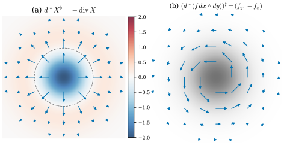
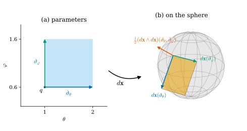

35.5 Inner Products and Vector-Valued Forms
Goals
- form의 pointwise inner product와 L2 inner product \(\langle\!\langle\alpha, \beta\rangle\!\rangle = \int\alpha\wedge\star\beta\)를 정의하고 계산할 수 있다.
- codifferential \(d^*\)를 \(d\)의 L2 adjoint로 정의하고, \(\R^n\)에서 \(d^* = (-1)^{n(k+1)+1}\star d\star\)임을 Stokes's theorem으로 증명하며, 함수에서 \(d^*d = -\Delta\)임을 보일 수 있다. Crane의 \(\delta = \star d\star\)와의 부호 차이를 설명할 수 있다.
- vector-valued form을 정의하고, immersion \(\mathbf{x}\)의 differential \(d\mathbf{x}\)를 \(\R^3\)-valued 1-form으로 다룰 수 있다.
- \(\R^3\)-valued form의 wedge(cross product와 inner product)의 대칭성과 self-wedge \((d\mathbf{x}\wedge d\mathbf{x})(u, v) = 2\,d\mathbf{x}(u)\times d\mathbf{x}(v)\)를 증명할 수 있다.
Prerequisites
Motivation
Section 35.4까지 form을 미분하고 적분했다. 남은 두 가지 도구가 있다. 첫째, form 하나의 크기와 form 두 개 사이의 각을 재는 inner product다. 함수에서는 \(\int fg\)가 그 역할을 한다 [CMU-DDG L7]. 최소제곱 문제나 에너지 최소화도 이런 inner product 위에서 정의된다. 이 inner product가 있으면 \(d\)의 adjoint, 곧 codifferential을 말할 수 있고, Laplacian과 Hodge decomposition(Chapter 42, Chapter 45)이 그 위에 선다.
둘째, 값이 수가 아니라 vector인 form이다. \(\R^3\)의 surface를 매개화 \(\mathbf{x}\colon U \to \R^3\)으로 줄 때, \(\mathbf{x}\)는 점마다 \(\R^3\)의 점을 내고, 그 미분은 parameter 공간의 tangent vector를 \(\R^3\)의 vector로 늘인다. 이것을 form의 언어로 쓰면 Chapter 38의 곡면론이 Chapter 34–35의 계산으로 바로 이어진다.
The L2 Inner Product of Forms
Chapter 34는 \(\Lambda^k(V^*)\)에 inner product를 주었다(Section 34.4). differential form에는 그것을 점마다 쓴다. \(\alpha, \beta \in \Omega^k(U)\)에 대하여 함수 \(\inner{\alpha}{\beta}(p) := \inner{\alpha_p}{\beta_p}\)를 pointwise inner product라 부르자. \(U\)에는 계속 유클리드 inner product와 standard orientation을 주고, \(dV = dx^1\wedge\cdots\wedge dx^n = \star 1\)이다(Section 35.1).
Proposition 35.5.1 (pointwise inner product). \(\alpha = \sum_I\alpha_I\,dx^I\), \(\beta = \sum_I\beta_I\,dx^I \in \Omega^k(U)\)이면 \(\inner{\alpha}{\beta} = \sum_I\alpha_I\beta_I\)는 smooth 함수이고
이다.
Proof. 점마다 \((dx^i)\)는 positively oriented orthonormal coframe이므로 \((dx^I)\)는 \(\Lambda^k\)의 orthonormal basis이고(Proposition 34.2.1을 \(V^*\)에서) \(\inner{\alpha_p}{\beta_p} = \sum_I\alpha_I(p)\beta_I(p)\)이다. (35.5.1)은 Proposition 34.4.11(b)를 점마다 쓴 것이고, inner product가 symmetric이므로 두 식이 같다.
곡선 좌표에서는 coframe이 orthonormal이 아니라 공식이 바뀐다. polar coordinates에서는 \(\inner{dr}{dr} = 1\), \(\inner{d\theta}{d\theta} = 1/r^2\), \(\inner{dr}{d\theta} = 0\)이었다(Example 35.1.9). (35.5.1)은 좌표 없는 식이라 어느 좌표에서도 쓸 수 있다.
pointwise inner product를 적분하면 form 전체의 inner product가 된다. 적분이 유한하도록 영역을 bounded로 잡거나 form 하나의 support를 compact로 잡는다. \(U\) 안에서 compact support를 갖는 smooth \(k\)-form 전체를 \(\Omega^k_c(U)\)로 쓴다(support는 Definition 12.3.2).
Definition 35.5.2 (L2 inner product of forms). (a) \(D\)가 domain of integration이고 \(\alpha, \beta\)가 \(\overline D\)를 포함하는 open set 위의 \(k\)-form이면
(b) \(\alpha \in \Omega^k_c(U)\), \(\beta \in \Omega^k(U)\)이면 \(\inner{\alpha}{\beta}\)를 \(U\) 밖에서 \(0\)으로 늘인 함수는 compact support를 갖는 continuous 함수이므로, \(\operatorname{supp}\alpha\)를 품는 box \(Q\)에 대해 \(\langle\!\langle\alpha, \beta\rangle\!\rangle := \int_Q\inner{\alpha}{\beta}\,dV\)로 정한다(\(Q\)의 선택에 무관하다).
이것을 \(k\)-form의 L2 inner product(L2 내적)라 하고, \(\norm{\alpha} := \langle\!\langle\alpha, \alpha\rangle\!\rangle^{1/2}\)로 쓴다.
\(k = 0\)이면 \(\star g = g\,dV\)이므로 \(\langle\!\langle f, g\rangle\!\rangle = \int fg\,dV\), 곧 함수의 익숙한 L2 inner product다. degree를 세어 보면 \(\star\)의 역할이 보인다. \(\alpha\wedge\beta\)는 \(2k\)-form이라 \(k \neq n/2\)이면 Definition 35.3.1로 \(n\)차원 영역에서 적분할 수 없고, \(\alpha\wedge\star\beta\)는 \(k + (n - k) = n\)이라 언제나 적분할 수 있다. 강의 슬라이드는 integrand를 \(\star\alpha\wedge\beta\)로 써서 \(\R^2\)의 1-form 등에서 부호가 반대다(아래 Conventions 상자).
Proposition 35.5.3 (properties of the L2 inner product). (a) \(\langle\!\langle\cdot, \cdot\rangle\!\rangle\)는 symmetric이고 bilinear이다. (b) \(\langle\!\langle\alpha, \alpha\rangle\!\rangle \ge 0\)이고, \(\alpha \in \Omega^k_c(U)\)이면 \(\langle\!\langle\alpha, \alpha\rangle\!\rangle = 0\)과 \(\alpha = 0\)은 동치다. 따라서 \(\Omega^k_c(U)\)에서 inner product다. (c) \(\langle\!\langle\star\alpha, \star\beta\rangle\!\rangle = \langle\!\langle\alpha, \beta\rangle\!\rangle\)이다.
Proof. (a) pointwise inner product가 symmetric bilinear이고 적분이 linear다. (b) \(\inner{\alpha}{\alpha} = \sum_I\alpha_I^2 \ge 0\)이다. 적분이 \(0\)이고 \(\alpha_p \neq 0\)인 점이 있으면, continuous 함수 \(\inner{\alpha}{\alpha}\)가 \(p\) 근처의 작은 box에서 양수의 하한을 가져 적분이 양수가 되므로 모순이다(Lemma 35.4.15와 같은 논법). (c) \(\star\)는 점마다 isometry다(Proposition 34.4.11(d)).
Example 35.5.4 (L2 inner products in the plane). (a) unit disk \(B\)에서 \(\norm{x\,dy}^2\) \(= \int_Bx^2\,dV\) \(= \int_0^{2\pi}\!\int_0^1r^2\cos^2\theta\,r\,dr\,d\theta\) \(= \tfrac{\pi}{4}\)이고 \(\langle\!\langle dx, dy\rangle\!\rangle_B = 0\)이다. (b) saddle의 높이 \(f = x^2 - y^2\)는 \(df = 2x\,dx - 2y\,dy\)이므로 \(\norm{df}_B^2 = \int_B 4(x^2 + y^2)\,dV = 4\cdot\tfrac{\pi}{2} = 2\pi\)이다(Example 35.3.3(b)). 이 값의 절반 \(\tfrac12\int\abs{\grad f}^2\)이 Chapter 42의 Dirichlet energy다. (c) annulus \(A = \{1 \le r \le 2\}\)에서 \(\norm{d\theta}_A^2\) \(= \int_A\tfrac{1}{r^2}\,dV\) \(= \int_0^{2\pi}\!\int_1^2\tfrac{1}{r^2}\,r\,dr\,d\theta\) \(= 2\pi\log 2\)이고, \(\langle\!\langle dr, d\theta\rangle\!\rangle_A = 0\)이며, \(\norm{\star d\theta}_A = \norm{dr/r}_A = \norm{d\theta}_A\)이다(Proposition 35.5.3(c)).
Verification: verify/v-35-5-inner-products-vector-valued-forms.py
Non-example 35.5.5 (why the star is needed). (a) \(\R^2\)의 1-form에 대해 \(\int_D\alpha\wedge\beta\)는 적분할 수 있지만 inner product가 아니다. \(\alpha\wedge\beta = -\beta\wedge\alpha\)라 antisymmetric이고, \(\int_D\alpha\wedge\alpha = 0\)이라 크기를 재지 못한다. (b) bounded가 아닌 영역에서는 유한하지 않을 수 있다. \(\R^2\) 전체에서 \(\int\inner{dx}{dx}\,dV = \int 1 = \infty\)이다. Definition 35.5.2가 bounded 영역이나 compact support를 요구하는 이유다.
The Codifferential
행렬 \(A\)의 transpose는 \(\inner{Au}{v} = \inner{u}{A^{\mathsf T}v}\)로 특징지어진다. \(d\)에 대해서도 L2 inner product로 같은 일을 한다.
Definition 35.5.6 (codifferential). \(U \subseteq \R^n\)이 open set이고 \(k \ge 1\)이라 하자. linear map \(d^*\colon \Omega^k(U) \to \Omega^{k-1}(U)\)가 모든 \(\alpha \in \Omega^{k-1}_c(U)\), \(\beta \in \Omega^k(U)\)에 대하여
를 만족하면 \(d^*\)를 codifferential(여미분)이라 한다. 0-form에서는 \(d^* := 0\)으로 둔다.
양변은 Definition 35.5.2(b)로 유한하다(\(d\alpha\)와 \(\alpha\)는 compact support). 이런 map이 있다면 하나뿐이다.
Lemma 35.5.7 (test forms detect forms). \(\gamma\)가 \(U\) 위의 continuous \(k\)-form이고 모든 \(\alpha \in \Omega^k_c(U)\)에 대하여 \(\int\inner{\alpha}{\gamma}\,dV = 0\)이면 \(\gamma = 0\)이다. 따라서 codifferential은 있다면 유일하다.
Proof. \(\gamma_p \neq 0\)이라 하자. 어떤 \(I\)에서 \(\gamma_I(p) \neq 0\)이고, continuity로 \(p\) 중심의 작은 closed ball \(\overline{B_{r_2}(p)} \subseteq U\)에서 \(\gamma_I\)의 부호가 일정하며 \(\abs{\gamma_I} \ge c \gt 0\)이다. Lemma 12.3.4의 bump function \(H\)(\(B_{r_1}(p)\)에서 \(1\), support는 \(\overline{B_{r_2}(p)}\) 안, 값은 \(0\)과 \(1\) 사이)로 \(\alpha = H\,\gamma_I(p)\,dx^I \in \Omega^k_c(U)\)를 잡으면 \(\int\inner{\alpha}{\gamma}\,dV\) \(= \gamma_I(p)\int H\gamma_I\,dV\) \(\ge c\,\abs{\gamma_I(p)}\vol(B_{r_1})\) \(\gt 0\)이 되어 모순이다. 두 codifferential \(d^*\), \(d^{*\prime}\)이 있으면 \(\gamma = d^*\beta - d^{*\prime}\beta\)에 이것을 쓴다.
Theorem 35.5.8 (the codifferential on \(\R^n\)). open set \(U \subseteq \R^n\)에서 codifferential이 있고, \(\beta \in \Omega^k(U)\)에 대하여
이다. 특히 다음이 성립한다.
- (a) 1-form에서는 어느 \(n\)이든 \(d^* = -\star d\star\)이고 \(d^*(X^\flat) = -\divg X\)이다.
- (b) 함수에서 \(d^*df = -\Delta f\)이다(\(\Delta = \divg\grad\)).
- (c) \(n = 2\)이면 모든 degree에서 \(d^* = -\star d\star\)이고, \(n = 3\)이면 \(d^* = (-1)^k\star d\star\)(1-form \(-\), 2-form \(+\), 3-form \(-\))이다.
- (d) \(d^*\circ d^* = 0\)이다.
이 정리가 말하는 것. \(d\)의 adjoint는 “\(\star\)로 바꾸고, \(d\)하고, \(\star\)로 되돌린다”이고, 부호는 차원과 degree로 정해진다. 부호의 근원은 두 가지다. product rule의 \((-1)^{k-1}\)과, \(\star\star = \pm 1\)이다. \(-\divg\)가 \(\grad\)의 adjoint라는 vector calculus의 사실(부분적분)이 (a)다.
Proof idea: \(d(\alpha\wedge\star\beta)\)를 product rule로 풀고, compact support 덕분에 Stokes's theorem에서 boundary 항이 \(0\)임을 쓴다. 그러면 \(\int d\alpha\wedge\star\beta = \pm\int\alpha\wedge d\star\beta\)이고, 오른쪽을 \(\int\alpha\wedge\star(\cdots)\) 꼴로 맞추는 데 \(\star\star\)의 부호가 든다.
Proof. \(\alpha \in \Omega^{k-1}_c(U)\), \(\beta \in \Omega^k(U)\)라 하자. \((n-1)\)-form \(\alpha\wedge\star\beta\)를 \(U\) 밖에서 \(0\)으로 늘이면 \(\R^n\) 위의 smooth form이다(\(U\) 밖의 점은 \(\operatorname{supp}\alpha\)와 떨어진 근방을 가진다). \(\operatorname{supp}\alpha\)를 내부에 품는 box \(Q\)를 잡으면 \(\alpha\wedge\star\beta\)는 \(\partial Q\) 위에서 \(0\)이므로 Theorem 35.4.8에서 \(\int_Qd(\alpha\wedge\star\beta) = 0\)이다. graded product rule(Theorem 35.2.4, (D2))에서 \(d(\alpha\wedge\star\beta) = d\alpha\wedge\star\beta + (-1)^{k-1}\alpha\wedge d\star\beta\)이므로
\[ \langle\!\langle d\alpha, \beta\rangle\!\rangle = \int_Qd\alpha\wedge\star\beta = (-1)^k\int_Q\alpha\wedge d\star\beta \]
이다. \(d\star\beta\)는 \((n-k+1)\)-form이다. \(\gamma := \star d\star\beta\)((\(k-1\))-form)로 두면 Proposition 34.2.9(점마다)에서 \(\star\gamma = \star\star(d\star\beta) = (-1)^{(n-k+1)(k-1)}d\star\beta\)이므로 \(d\star\beta = (-1)^{(n-k+1)(k-1)}\star\gamma\)이고
\[ \begin{aligned} \langle\!\langle d\alpha, \beta\rangle\!\rangle &= (-1)^{k + (n-k+1)(k-1)}\int_Q\alpha\wedge\star\gamma \\ &= \big\langle\!\big\langle\alpha,\ (-1)^{k + (n-k+1)(k-1)}\star d\star\beta\big\rangle\!\big\rangle \end{aligned} \]
이다. 지수를 2로 나눈 나머지로 보면 \((k-1)^2 \equiv k - 1\)이므로 \(k + (n-k+1)(k-1)\) \(= k + n(k-1) - (k-1)^2\) \(\equiv k + n(k-1) + (k-1)\) \(\equiv 1 + n(k-1)\) \(\equiv n(k+1) + 1\)이다(\(n(k+1) - n(k-1) = 2n\)). 따라서 (35.5.4)의 \(d^*\)가 (35.5.3)을 만족하고, 유일성은 Lemma 35.5.7이다.
(a) \(k = 1\)이면 지수 \(2n + 1\)은 홀수다. \(\star d\star X^\flat = \divg X\)는 Proposition 35.2.12(a)다. (b) \(X^\flat = df\), \(X = \grad f\)로 (a)를 쓴다. (c) \(n = 2\)이면 지수 \(2(k+1) + 1\)은 홀수이고, \(n = 3\)이면 \(3(k+1) + 1 \equiv k\)이다. (d) \(d^*d^*\beta = \pm\star d\star\star d\star\beta = \pm\star d\,d\star\beta = 0\)이다(가운데 \(\star\star = \pm 1\), (D3)).
Example 35.5.9 (codifferentials in the plane and in space).
- (a) \(\R^2\)의 2-form \(f\,dx\wedge dy\): \(\star(f\,dx\wedge dy) = f\), \(\star df = f_x\,dy - f_y\,dx\)이므로 \(d^*(f\,dx\wedge dy) = -\star df = f_y\,dx - f_x\,dy\)이다. vector로는 \((f_y, -f_x)\), 곧 \(\grad f\)를 시계 방향으로 \(90^\circ\) 돌린 것이라 \(f\)의 level curve를 따라 흐른다.
- (b) \(\R^2 \setminus \{0\}\)의 \(d\theta\): \(\star d\theta = -dr/r = -d(\log r)\)((35.1.6))이므로 \(d^*d\theta = -\star d\star d\theta = \star d\,d(\log r) = 0\)이다. 따라서 \(d\theta\)는 \(d(d\theta) = 0\)이고 \(d^*(d\theta) = 0\)인 1-form이다. Chapter 45의 harmonic 1-form의 원형이다.
- (c) \(\R^3\)의 2-form \(\star X^\flat\): \(d^* = +\star d\star\)이고 \(\star\star = 1\)이므로 \(d^*(\star X^\flat) = \star dX^\flat = (\operatorname{curl}X)^\flat\)이다(Proposition 35.2.8(b)). 곧 \(\R^3\)의 2-form에서 \(d^*\)는 curl이고, “curl은 자기 자신의 adjoint”라는 부분적분 공식 \(\int\inner{\operatorname{curl}X}{Y} = \int\inner{X}{\operatorname{curl}Y}\)(compact support)이 \(\langle\!\langle dX^\flat, \star Y^\flat\rangle\!\rangle = \langle\!\langle X^\flat, d^*\star Y^\flat\rangle\!\rangle\)이다.
Verification: verify/v-35-5-inner-products-vector-valued-forms.py
Figure 35.5.1은 \(\R^2\)에서 \(d^*\)의 두 얼굴을 보여 준다. 왼쪽 (a)의 파란 화살표는 vector field \(X = p\,e^{-\abs{p}^2}\)이고, 원점에서 바깥으로 퍼진다. 배경색은 함수 \(d^*X^\flat = -\divg X = (2\abs{p}^2 - 2)e^{-\abs{p}^2}\)이다(파랑이 음수, 빨강이 양수). 회색 점선 원 \(\abs{p} = 1\) 안쪽에서는 흐름이 퍼져 나가므로(\(\divg X \gt 0\)) \(d^*X^\flat\)이 음수이고, 바깥에서는 흐름이 느려지며 모이므로 양수다. 부호를 기억하는 법: \(d^*\)는 “들어오는 양”을 잰다. 오른쪽 (b)의 회색 배경은 bump \(f = e^{-\abs{p}^2}\)이고, 파란 화살표는 2-form \(f\,dx\wedge dy\)의 \(d^*\)를 vector로 바꾼 \((f_y, -f_x) = 2f(-y, x)\)이다. bump 둘레를 반시계 방향으로 돌며 level circle에 접한다. 1-form의 \(d^*\)는 divergence(의 \(-1\)배)이고, 2-form의 \(d^*\)는 함수를 그 level curve를 따르는 회전 흐름으로 바꾼다.

Vector-Valued Forms
지금까지의 form은 vector \(k\)개를 받아 실수 하나를 냈다. 곡면의 기하를 다루려면 값이 \(\R^3\)의 vector인 측정이 필요하다 [CMU-DDG VVF].
Definition 35.5.10 (vector-valued form). \(V\)가 vector space이고 \(k \ge 1\)이라 하자. alternating multilinear map \(\alpha\colon V\times\cdots\times V \to \R^m\)(\(V\)가 \(k\)개)을 \(V\) 위의 \(\R^m\)-valued \(k\)-form이라 하고, \(\R^m\)-valued 0-form은 \(\R^m\)의 원소로 둔다. 성분 \(\alpha^a\)(\(\alpha\)의 값의 \(a\)번째 좌표)는 보통의 \(k\)-form이고 \(\alpha = \sum_{a=1}^m\alpha^a\,e_a\)이다. open set \(U \subseteq \R^n\)의 점마다 \(\R^m\)-valued \(k\)-form을 붙이고 성분 \(\alpha^a\)가 모두 \(\Omega^k(U)\)에 들면 그것을 \(U\) 위의 \(\R^m\)-valued (differential) \(k\)-form이라 하고, 그 전체를 \(\Omega^k(U; \R^m)\)으로 쓴다. 이것들을 vector-valued form(벡터값 형식)이라 한다.
Example 35.5.11 (a map and its differential). (a) smooth map \(\mathbf{x}\colon U \to \R^m\)은 \(\R^m\)-valued 0-form이다. 성분마다 differential을 모은 \[ d\mathbf{x} := \sum_a d(\mathbf{x}^a)\,e_a \in \Omega^1(U; \R^m), \qquad d\mathbf{x}(X) = D\mathbf{x}\,X \] 는 \(\R^m\)-valued 1-form이다(Proposition 35.2.2를 성분마다). \(d\mathbf{x}_p(v)\)는 \(v\) 방향의 directional derivative, 곧 parameter 공간에서 \(v\)로 움직일 때 \(\mathbf{x}\)의 값이 움직이는 속도 vector다. \(U \subseteq \R^2\)의 좌표 \((u, v)\)로 쓰면 \(d\mathbf{x} = \mathbf{x}_u\,du + \mathbf{x}_v\,dv\)이다. 이 식은 “\(d\mathbf{x}(X) = X^u\,\mathbf{x}_u + X^v\,\mathbf{x}_v\)”라는 뜻이고, coefficient가 vector다.
(b) sphere \(\mathbf{x}(\theta, \varphi) = (r\sin\theta\cos\varphi, r\sin\theta\sin\varphi, r\cos\theta)\)에서 \(d\mathbf{x} = \mathbf{x}_\theta\,d\theta + \mathbf{x}_\varphi\,d\varphi\)이고, \(d\mathbf{x}(\partial_\theta) = \mathbf{x}_\theta\), \(d\mathbf{x}(\partial_\varphi) = \mathbf{x}_\varphi\)이다(Example 7.1.2의 편미분).
(c) helix \(\gamma(t) = (a\cos t, a\sin t, bt)\)는 구간 위의 \(\R^3\)-valued 0-form이고 \(d\gamma = \gamma'(t)\,dt\)이다. Chapter 37은 곡선을 이 언어로 쓴다.
vector-valued form을 계산하는 대부분의 규칙은 성분마다 실수 form의 규칙을 쓰면 된다. 예외는 wedge product다. 두 값을 곱해야 하는데, \(\R^3\)의 두 vector를 곱하는 방법은 하나가 아니다.
Definition 35.5.12 (wedge product with a bilinear product). bilinear map \(B\colon \R^m\times\R^m \to \R^p\)와 \(\alpha \in \Omega^k(U; \R^m)\), \(\beta \in \Omega^l(U; \R^m)\)에 대하여 \[ \alpha\wedge_B\beta := \sum_{a,b}(\alpha^a\wedge\beta^b)\,B(e_a, e_b) \in \Omega^{k+l}(U; \R^p) \] 로 정한다. \(\R^3\)-valued form에서는 cross product로 만든 것을 그냥 \(\alpha\wedge\beta\)로, inner product로 만든 실수 form을 \(\langle\alpha\wedge\beta\rangle\)로 쓴다.
1-form끼리는 (34.4.3)과 bilinearity에서
이다. 이 식은 basis에 무관하므로 정의도 basis에 무관하다. \(\R^3\)-valued 0-form \(f\)와 1-form \(\beta\)는 \((f\wedge\beta)(u) = f\times\beta(u)\)이다. 성질은 실수 form과 다르다.
Proposition 35.5.13 (symmetry of the wedge of vector-valued forms). \(B(w, v) = \varepsilon\,B(v, w)\)(\(\varepsilon = \pm 1\))이면 \(\alpha\in\Omega^k\), \(\beta\in\Omega^l\)에 대해 \(\alpha\wedge_B\beta = \varepsilon(-1)^{kl}\,\beta\wedge_B\alpha\)이다. 특히 \(\R^3\)-valued 1-form \(\alpha, \beta\)에 대하여 \[ \alpha\wedge\beta = \beta\wedge\alpha, \qquad \langle\alpha\wedge\beta\rangle = -\langle\beta\wedge\alpha\rangle \] 이다.
이 명제가 말하는 것. 두 1-form의 순서를 바꾸면 (35.5.5)의 두 항의 역할이 바뀌어 부호가 한 번 바뀌고, cross product의 두 인자도 자리가 바뀌어 부호가 또 한 번 바뀐다. 그래서 결과가 그대로다. inner product는 인자를 바꿔도 부호가 그대로라 그 wedge는 실수 form처럼 부호가 바뀐다.
Proof. Proposition 34.1.3(c)에서 \(\alpha^a\wedge\beta^b = (-1)^{kl}\beta^b\wedge\alpha^a\)이므로 \[ \alpha\wedge_B\beta = \sum_{a,b}(-1)^{kl}(\beta^b\wedge\alpha^a)\,\varepsilon B(e_b, e_a) = \varepsilon(-1)^{kl}\beta\wedge_B\alpha \] 이다. cross product는 \(\varepsilon = -1\), inner product는 \(\varepsilon = +1\)이고 \(k = l = 1\)이면 \((-1)^{kl} = -1\)이다.
Proposition 35.5.14 (self-wedge). \(\R^3\)-valued 1-form \(\alpha\)에 대하여 \((\alpha\wedge\alpha)(u, v) = 2\,\alpha(u)\times\alpha(v)\)이고 \(\langle\alpha\wedge\alpha\rangle = 0\)이다. 특히 \(\mathbf{x}\colon U \to \R^3\)(\(U \subseteq \R^2\), 좌표 \((u, v)\))이면
이고, \((d\mathbf{x}\wedge d\mathbf{x})(\partial_u, \partial_v)\)의 크기는 \(d\mathbf{x}(\partial_u), d\mathbf{x}(\partial_v)\)가 펼치는 평행사변형의 넓이의 두 배, 방향은 그 normal이다.
Proof. (35.5.5)에서 \(\alpha(u)\times\alpha(v) - \alpha(v)\times\alpha(u) = 2\,\alpha(u)\times\alpha(v)\)이고, inner product 쪽은 \(\inner{\alpha(u)}{\alpha(v)} - \inner{\alpha(v)}{\alpha(u)} = 0\)이다. \(d\mathbf{x}\wedge d\mathbf{x}\)는 2-form이라 \(\R^2\)에서 \(c\,du\wedge dv\) 꼴이고, \(c = (d\mathbf{x}\wedge d\mathbf{x})(\partial_u, \partial_v) = 2\,\mathbf{x}_u\times\mathbf{x}_v\)이다(\(d\mathbf{x}(\partial_u) = \mathbf{x}_u\)). \(\abs{\mathbf{x}_u\times\mathbf{x}_v}\)는 평행사변형의 넓이다(Theorem 1.6.16).
실수 1-form에서는 \(\alpha\wedge\alpha = 0\)이었다(Proposition 34.1.3(b)를 \(V^*\)에서). 그 이유는 (35.5.5)의 실수판에서 두 항 \(\alpha(u)\alpha(v)\)와 \(\alpha(v)\alpha(u)\)가 같아 지워지기 때문이다. cross product에서는 \(\alpha(v)\times\alpha(u) = -\alpha(u)\times\alpha(v)\)라 두 항이 지워지지 않고 더해진다. 그 결과 \(d\mathbf{x}\wedge d\mathbf{x}\)는 parameter 평행사변형이 \(\mathbf{x}\)로 옮겨진 tangent 평행사변형의 넓이와 normal 방향을 기록한다.
Example 35.5.15 (the sphere). sphere에서 \(\mathbf{x}_\theta\times\mathbf{x}_\varphi = r^2\sin\theta\,\mathbf{N}\)(\(\mathbf{N} = \mathbf{x}/r\), 바깥쪽, Example 7.5.2)이므로 (35.5.6)에서
\[ \begin{aligned} (d\mathbf{x}\wedge d\mathbf{x})(\partial_\theta, \partial_\varphi) &= 2r^2\sin\theta\,\mathbf{N}, \\ d\mathbf{x}\wedge d\mathbf{x} &= 2r^2\sin\theta\,\mathbf{N}\;d\theta\wedge d\varphi \end{aligned} \]
이다. 크기 \(2r^2\sin\theta\)는 sphere의 넓이 요소 \(r^2\sin\theta\)(Example 35.3.10(a))의 두 배다. 한편 \(\langle d\mathbf{x}\wedge d\mathbf{x}\rangle = 0\)이다.
Verification: verify/v-35-5-inner-products-vector-valued-forms.py
Figure 35.5.2로 이 예를 보자(\(r = 1\)). 왼쪽 (a)는 parameter 평면이다. 점 \(q = (\theta, \varphi) = (1.0, 0.6)\)에서 coordinate vector \(\partial_\theta\)(파랑)와 \(\partial_\varphi\)(초록)가 하늘색 단위 정사각형을 펼친다. 검은 곡선 화살표 \(d\mathbf{x}\)가 이 vector들을 오른쪽 (b)의 sphere로 보낸다. (b)에서 파란 화살표가 \(d\mathbf{x}(\partial_\theta) = \mathbf{x}_\theta\)(길이 \(1\), 경선을 따라 남쪽), 초록 화살표가 \(d\mathbf{x}(\partial_\varphi) = \mathbf{x}_\varphi\)(길이 \(\sin 1.0 = 0.841\), 위도선을 따라 동쪽)이고, 주황 평행사변형이 둘이 펼치는 tangent plane 안의 조각이다. 주홍 화살표가 \((d\mathbf{x}\wedge d\mathbf{x})(\partial_\theta, \partial_\varphi)\)를 절반 길이로 그린 것으로, 바깥쪽 normal 방향이고 실제 길이 \(1.683\)은 주황 평행사변형 넓이 \(0.841\)의 두 배다. parameter 평면의 넓이 \(1\)인 정사각형이 sphere 위에서 넓이 \(0.841\)인 평행사변형으로 바뀌고, \(d\mathbf{x}\wedge d\mathbf{x}\)는 그 넓이(의 두 배)와 방향을 함께 기록한다.

exterior derivative는 성분마다 한다: \(d\big(\sum_a\alpha^a e_a\big) := \sum_a d\alpha^a\,e_a\).
Proposition 35.5.16 (exterior derivative of vector-valued forms). (a) \(d\circ d = 0\)이다. (b) 상수 bilinear map \(B\)에 대하여 \(d(\alpha\wedge_B\beta) = d\alpha\wedge_B\beta + (-1)^k\alpha\wedge_Bd\beta\)(\(\alpha\)는 \(k\)-form)이다. (c) map \(\mathbf{x}\)를 0-form으로 보면 그 exterior derivative가 Example 35.5.11의 \(d\mathbf{x}\)이고 \(d(d\mathbf{x}) = 0\)이다.
Proof. 모두 성분마다 Theorem 35.2.4를 쓴 것이다. (b)에서 \(\alpha\wedge_B\beta\)의 \(c\)번째 성분은 \(\sum_{a,b}B^c(e_a, e_b)\,\alpha^a\wedge\beta^b\)이고 \(B^c(e_a, e_b)\)는 상수이므로, 각 항에 (D2)를 쓰고 다시 모은다. (c)는 정의다.
예를 들어 \(\R^3\)-valued 0-form \(\mathbf{x}\)와 1-form \(d\mathbf{x}\)의 wedge \(\mathbf{x}\wedge d\mathbf{x}\)(값 \(\mathbf{x}\times d\mathbf{x}(v)\))는 (b)와 (c)에서 \(d(\mathbf{x}\wedge d\mathbf{x}) = d\mathbf{x}\wedge d\mathbf{x}\)이다.
Summary
- form의 pointwise inner product는 \(\alpha\wedge\star\beta = \inner{\alpha}{\beta}\,dV\)로 정해지고, 그 적분이 L2 inner product \(\langle\!\langle\alpha, \beta\rangle\!\rangle = \int\alpha\wedge\star\beta\)이다(Proposition 35.5.1, Definition 35.5.2).
- codifferential \(d^*\)는 compact support인 form에 대한 \(d\)의 L2 adjoint이고, \(\R^n\)의 \(k\)-form에서 \(d^* = (-1)^{n(k+1)+1}\star d\star\)이다. 1-form에서 \(d^*X^\flat = -\divg X\), 함수에서 \(d^*d = -\Delta\)이다(Definition 35.5.6, Theorem 35.5.8).
- Crane의 \(\delta = \star d\star\)는 부호가 없어 \(d^* = (-1)^{n(k+1)+1}\delta\)이다. 곡면(\(n = 2\))에서는 \(\delta = -d^*\)이고, \(\R^3\)에서는 degree마다 부호가 다르다. 강의 슬라이드의 inner product integrand \(\star\alpha\wedge\beta\)도 \(k(n-k)\)가 홀수이면 부호가 반대다(Conventions 상자).
- vector-valued form은 값이 \(\R^m\)인 alternating multilinear 측정이다. map \(\mathbf{x}\)의 \(d\mathbf{x}\)가 대표적인 예다(Definition 35.5.10, Example 35.5.11).
- \(\R^3\)-valued form의 cross product wedge는 1-form끼리 symmetric이고 \(d\mathbf{x}\wedge d\mathbf{x} = 2\,\mathbf{x}_u\times\mathbf{x}_v\,du\wedge dv\)이다. sphere에서는 \(2r^2\sin\theta\,\mathbf{N}\,d\theta\wedge d\varphi\)이다(Proposition 35.5.13, Proposition 35.5.14, Example 35.5.15).
다음 장에서는 이 모든 연산을 mesh 위로 옮긴다. smooth form을 simplex 위의 적분값으로 바꾸고(de Rham map), Stokes's theorem을 정의로 삼아 discrete \(d\)를 만들며, \(\star\)는 primal과 dual cell의 크기의 비로 근사한다. 그때 \(d\)와 Stokes's theorem은 정확히 살아남고, metric 정보는 모두 \(\star\)에 모인다.
Exercises
Exercise 35.5.1 ★ unit square \(Q = [0, 1]^2\)에서 \(\alpha = x\,dx + dy\), \(\beta = dx - y\,dy\)라 하자. \(\langle\!\langle\alpha, \beta\rangle\!\rangle_Q\), \(\norm{\alpha}_Q^2\), 그리고 \(\int_Q\alpha\wedge\beta\)를 구하여라.
Solution
\(\inner{\alpha}{\beta} = x\cdot 1 + 1\cdot(-y) = x - y\)이므로 \(\langle\!\langle\alpha, \beta\rangle\!\rangle_Q = \tfrac12 - \tfrac12 = 0\)이다. \(\norm{\alpha}_Q^2 = \int_Q(x^2 + 1) = \tfrac13 + 1 = \tfrac43\)이다. \(\alpha\wedge\beta\) \(= (x\cdot(-y) - 1\cdot 1)\,dx\wedge dy\) \(= -(xy + 1)\,dx\wedge dy\)이므로 \(\int_Q\alpha\wedge\beta = -\tfrac14 - 1 = -\tfrac54\)이다. 둘째와 셋째는 다른 양이다(Non-example 35.5.5).
Exercise 35.5.2 ★ \(\R^3\)에서 (a) \(d^*(xyz\,dx\wedge dy)\), (b) \(d^*\big((x^2 + y^2 + z^2)\,dx\wedge dy\wedge dz\big)\)를 (35.5.4)로 구하여라. (a)를 Example 35.5.9(c)의 curl로 검산하여라.
Solution
(a) 2-form이므로 \(d^* = +\star d\star\)이다. \(\star(dx\wedge dy) = dz\)이므로 \(\star d\star\) \(= \star d(xyz\,dz)\) \(= \star(yz\,dx\wedge dz + xz\,dy\wedge dz)\)이고, \(\star(dx\wedge dz) = -dy\), \(\star(dy\wedge dz) = dx\)(Example 34.5.4)이므로 \(d^* = xz\,dx - yz\,dy\)이다. 검산: \(xyz\,dx\wedge dy = \star w^\flat\), \(w = (0, 0, xyz)\)이고 \(\operatorname{curl}w\) \(= (\partial_y(xyz), -\partial_x(xyz), 0)\) \(= (xz, -yz, 0)\)이다. (b) 3-form이므로 \(d^* = -\star d\star\)이고 \(\star(f\,dV) = f\)이므로 \(d^*\) \(= -\star df\) \(= -(2x\,dy\wedge dz + 2y\,dz\wedge dx + 2z\,dx\wedge dy)\)이다.
Exercise 35.5.3 ★★ \(f \in \Omega^0_c(\R^n)\)이면 \(\norm{df}^2 = -\langle\!\langle f, \Delta f\rangle\!\rangle\)임을 보이고, 따라서 \(\int f\,\Delta f\,dV \le 0\)이며 등호는 \(f = 0\)일 때뿐임을 보여라.
Solution
(35.5.3)을 \(\alpha = f\), \(\beta = df\)에 쓰면 \(\norm{df}^2\) \(= \langle\!\langle df, df\rangle\!\rangle\) \(= \langle\!\langle f, d^*df\rangle\!\rangle\) \(= -\langle\!\langle f, \Delta f\rangle\!\rangle\)이다(Theorem 35.5.8(b)). 왼쪽은 \(\ge 0\)이다. 등호이면 Proposition 35.5.3(b)에서 \(df = 0\)이고, \(\R^n\)은 star-shaped이므로 \(f\)는 상수(Proposition 35.2.10)이며 compact support이므로 \(0\)이다. 이것이 “\(\Delta\)는 negative semidefinite”라는 말의 뜻이다(Laplacian의 부호, Section 35.2의 Conventions 상자).
Exercise 35.5.4 ★★ (a) cylinder \(\mathbf{x}(u, v) = (r\cos u, r\sin u, v)\)와 (b) torus of revolution \(\mathbf{x}(u, v)\) \(= ((R + r\cos u)\cos v,\) \((R + r\cos u)\sin v, r\sin u)\)에서 \(d\mathbf{x}\wedge d\mathbf{x}\)를 구하고, 각각 바깥쪽 unit normal의 몇 배인지 써라.
Solution
(a) \(\mathbf{x}_u\times\mathbf{x}_v = (r\cos u, r\sin u, 0)\)이므로 \(d\mathbf{x}\wedge d\mathbf{x}\) \(= 2r(\cos u, \sin u, 0)\,du\wedge dv\) \(= 2r\,\mathbf{N}_{\mathrm{out}}\,du\wedge dv\)이다. (b) \(\mathbf{x}_u = r(-\sin u\cos v, -\sin u\sin v, \cos u)\), \(\mathbf{x}_v = (R + r\cos u)(-\sin v, \cos v, 0)\)이고 \(\mathbf{x}_u\times\mathbf{x}_v\) \(= -r(R + r\cos u)(\cos u\cos v,\) \(\cos u\sin v, \sin u)\)이다. 이것은 관의 중심원 쪽, 곧 안쪽을 향한다(Example 7.5.2(c)). 따라서 \(d\mathbf{x}\wedge d\mathbf{x} = -2r(R + r\cos u)\,\mathbf{N}_{\mathrm{out}}\,du\wedge dv\)이다. 부호는 매개화의 orientation을 기록한다.
Exercise 35.5.5 ★ Coding. Implementation 상자의 함수로 \(\R^2\)의 unit square에서 (a) 0-form \(f\)와 1-form \(\beta_1\), (b) 1-form \(\alpha_1\)과 2-form \(\beta_2\)에 대해 adjoint 관계 (35.5.3)을 확인하고, (c) 부호 없는 \(\delta = \star d\star\)를 쓰면 두 관계가 모두 깨짐을 보여라(\(f\), \(\alpha_1\)은 boundary에서 \(0\)이 되게 잡는다).
Solution
X2 = [x, y]
b2 = (x * (1 - x) * y * (1 - y)) ** 2
f = {(): b2 * (1 + x * y)}
beta1 = {(0,): x ** 2 + y, (1,): x * y ** 3}
a1 = {(0,): b2 * y, (1,): b2 * (x - 2 * y)}
beta2 = {(0, 1): x ** 3 + y ** 2}
delta = lambda form, n, xs: star(d(star(form, n), xs), n) # Crane's delta, no sign
print([L2(d(f, X2), beta1, X2) == L2(f, codiff(beta1, 2, X2, 1), X2),
L2(d(a1, X2), beta2, X2) == L2(a1, codiff(beta2, 2, X2, 2), X2),
L2(d(f, X2), beta1, X2) == L2(f, delta(beta1, 2, X2), X2),
L2(d(a1, X2), beta2, X2) == L2(a1, delta(beta2, 2, X2), X2)])
[True, True, False, False]\(n = 2\)이면 모든 degree에서 \(d^* = -\star d\star = -\delta\)이므로(Theorem 35.5.8(c)), 양변이 \(0\)이 아닌 한 \(\delta\)로는 부호가 반대가 된다. 출력은 [True, True, False, False]이다.
Exercise 35.5.6 ★★★ \(\R^3\)의 1-form \(X^\flat\)에 대해 (a) \((dd^* + d^*d)X^\flat\) \(= (\operatorname{curl}\operatorname{curl}X - \grad\divg X)^\flat\) \(= -(\Delta X)^\flat\)(\(\Delta X\)는 성분마다의 Laplacian)임을 보이고, (b) Crane의 \(\delta d + d\delta\)(\(\delta = \star d\star\))는 \((\operatorname{curl}\operatorname{curl}X + \grad\divg X)^\flat\)를 줌을 보여라. (c) 2차원에서는 \(\delta d + d\delta = -(dd^* + d^*d)\)가 모든 degree에서 성립함을 보여라.
Hint
vector 항등식 \(\operatorname{curl}\operatorname{curl}X = \grad\divg X - \Delta X\)을 쓴다.
Solution
(a) Theorem 35.5.8(a)에서 \(d^*X^\flat = -\divg X\)이므로 \(dd^*X^\flat = -d(\divg X) = -(\grad\divg X)^\flat\)이다. \(dX^\flat = \star(\operatorname{curl}X)^\flat\)(Proposition 35.2.8(b))이고 2-form의 \(d^*\)는 Example 35.5.9(c)에서 curl이므로 \(d^*dX^\flat = (\operatorname{curl}\operatorname{curl}X)^\flat\)이다. 더하고 힌트를 쓰면 \(-(\Delta X)^\flat\)이다. (b) \(\delta dX^\flat\) \(= \star d\star\star(\operatorname{curl}X)^\flat\) \(= \star d(\operatorname{curl}X)^\flat\) \(= (\operatorname{curl}\operatorname{curl}X)^\flat\)이고 \(d\delta X^\flat\) \(= d(\star d\star X^\flat)\) \(= d(\divg X)\) \(= (\grad\divg X)^\flat\)이다. 합은 힌트에 의해 \((2\grad\divg X - \Delta X)^\flat\)이고, 이것은 \((\Delta X)^\flat\)의 상수배가 아니다. \(X = (x^2, 0, 0)\)이면 \(\operatorname{curl}X = 0\), \(\divg X = 2x\)이므로 결과는 \((2, 0, 0) = +\Delta X\)이다. \(X = (y^2, 0, 0)\)이면 \(\operatorname{curl}X = (0, 0, -2y)\), \(\operatorname{curl}\operatorname{curl}X = (-2, 0, 0)\), \(\divg X = 0\)이므로 결과는 \((-2, 0, 0) = -\Delta X\)이다. 두 경우 모두 \(\Delta X = (2, 0, 0)\)인데 비가 \(+1\)과 \(-1\)로 다르다. (c) \(n = 2\)이면 지수 \(n(k+1) + 1\)이 언제나 홀수라 모든 degree에서 \(d^* = -\delta\)이고, \(\delta d + d\delta = -(d^*d + dd^*)\)이다.